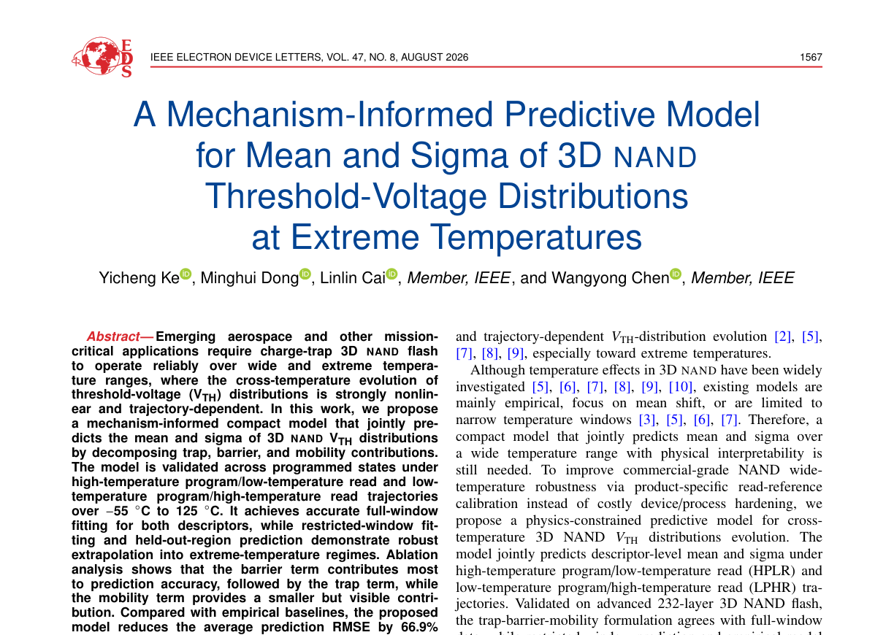

IEEE ELECTRON DEVICE LETTERS · FEATURED PAPER
Predicting 3D NAND Reliability Across Extreme Temperatures
A mechanism-informed model for threshold-voltage mean and sigma from −55°C to 125°C.
FIRST PAGE / EDL 2026232-LAYER TLC NAND

Featured paper · IEEE Electron Device Letters · 2026
Predicting 3D NAND Reliability Across Extreme Temperatures
A mechanism-informed model connects trap, barrier, and mobility physics to threshold-voltage mean and sigma from −55°C to 125°C.